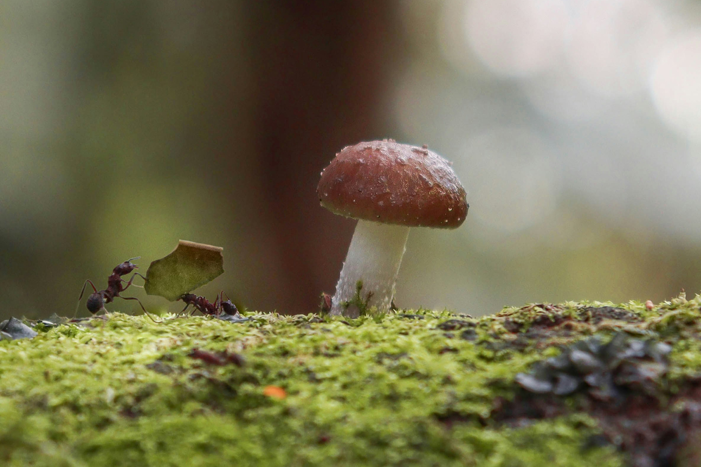

Craniosacral Therapy for you · Equine bodywork
Explore your inner quiet.
Two clear paths: Craniosacral Therapy for you, and equine bodywork and workshops for horses — across Ontario’s Georgian Triangle.
For you — craniosacral therapy
Gentle hands-on sessions at Collaborative Health Group, Collingwood
Book onlineFor your horse — bodywork & workshops
Massage, barn visits, and group days with Liw
The name
Why “Finding Quiet”?
Finding Quiet is my business name and my mantra. My goal is to support you and your body to find the internal quiet that lets you realize the full benefits of your body’s self-healing properties.
It is too easy to get caught up in the hustle of everyday life and function at less than our best — physically, mentally, and emotionally. Craniosacral therapy can help you slow down, rebalance, and reconnect to the inner wisdom that deals better with stress, eases pain, and supports wellness.
That same quiet is what I’m listening for with horses. We put our schedules and our work ethic on them; massage gives your horse time and space to drop into her own body — and find her way back to the grace she already has.


Craniosacral therapy
From Liw’s hands.
Craniosacral Therapy is a gentle, hands-on treatment that uses light touch to help release tension and encourage deep relaxation, comfort, and overall well-being.
Craniosacral therapy for you is carried out at Collaborative Health Group in Collingwood. A full session is about 1 hour · $80 including HST. More about Liw’s approach →
Cranial sacral sessions with Liw are a blessing. Liw connects with my energy, meeting me and my body where I am before moving forward… The rest of the session was both relaxing and energising.
Please confirm current rates when you book.
Other services
For the horse in your life — and for groups.

Equine massage
Hands-on work for the horse you have — trail, dressage, hunters, barrel racing, and everyone in between.
Session details
Workshops
A day with horses for a team, a group, or anyone curious about their own quiet — no riding required.
Plan an eventEmail findingquiet@gmail.com or call (705) 888-5290.
From the barn
More from ridersCorky loves your massages and the effects are lasting. He is simply more relaxed… Corky is a remarkable old man and still quite the athlete, and your visits seem to peel back the years.